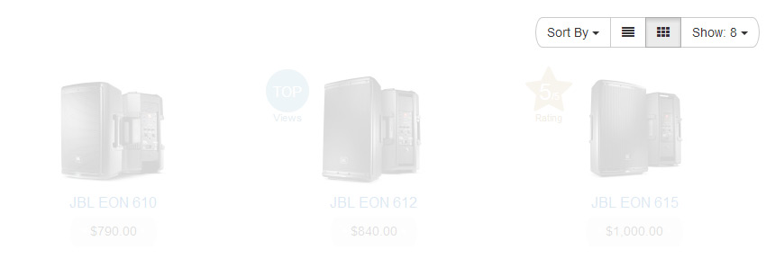
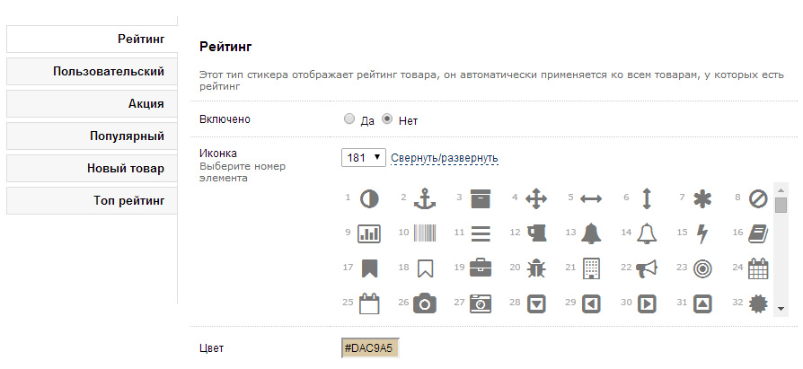

Обзор
Вступление
Сначала я хотел бы представиться. Кроме веб-разработки, последние 4 года я был совладельцем растущего интернет-магазина, мы занимались продажами аудио-техники и инструментов. К сожалению, политическая и экономическая ситуация в Украине не позволила нам реализовать все, что мы хотели, и нам пришлось продать магазин, но это был незабываемый опыт и очень интересный этап в жизни каждого участника нашей команды.
Здесь вы можете видеть результат нашей работы, основанный на опыте, полученном мною и моими коллегами. Я абсолютно уверен, что фундаментальная задача любого шаблона — это продажа ваших товаров или услуг, и в этом состоит философия Moneymaker.
Насчет того, что же такое "продающий" шаблон - важно понимать, что продающим его делаете вы сами, каким бы прекрасным ни был установленный вами шаблон, без понимания того, как работает интернет-магазин и что такое интернет-коммерция, вы не сможете построить прибыльный бизнес. Мои разработки лишь "фундамент" в этом деле, "стены" и "крышу" своего бизнеса вам предстоит возводить самостоятельно.
Гарантии
Я хотел бы гарантировать вам увеличение продаж (вероятно, так оно и будет), но как вы понимаете, даже самый лучший шаблон не сможет заменить людей. Чтобы получить отличные результаты, вы сами должны хорошо трудиться над своим магазином.
Особенности
Moneymaker создан на основе фреймворка Bootstrap 3 и сочетает в себе множество полезных модулей, встроенных и отдельно поставляемых, большинство из которых были протестированы и успешно внедрены в наш интернет-магазин:
- Модуль Преимущества, который является одним из наиболее важных (и недооцененных, увы) модулей в любом магазине
- Модуль Быстрый заказ, с которым ваши покупатели смогут быстрее делать покупки
- Модуль Перезвоните мне, позволяющий реализовать функцию обратного звонка
- Модуль Расширенных контактов, с которым вы предоставите покупателю больше способов связи
- Модуль Ajax-поиска с автоподстановкой
- Модуль Стикеры, созданный для облегчения процесса выбора покупок
- Отзывчивое Слайдшоу и Html модуль, адаптированные под шаблон Moneymaker
- Модули Вкладок товара, Header-меню и Footer-меню, Улучшенные категории
- Модуль Подарок в корзине и Таймер акций
- Модули Микроразметки, Социальных кнопок, Способов оплаты и многое другое
Кроме того, есть множество особенностей в шаблоне Moneymaker, которые я хотел бы выделить:
- Продающий дизайн, основанный на наших наблюдениях включая данные с вебвизора (интегрированного в наш магазин с 2011 г.)
- Удобный для покупателей интерфейс, переработанный в соответствии с подтвержденными правилами юзабилити и нашим опытом
- HTML5/CSS3 с механизмом поддержки устаревших браузеров (покупатели с IE8 будут вам благодарны)
- Отзывчивый дизайн, адаптированный под самые компактные устройства с экраном даже в 240px
- SEO-оптимизированный шаблон, с документацией и читабельным кодом, кросс-браузерностью и другими преимуществами
Код шаблона успешно проходит валидацию по стандартам html5, в частности для страниц товара и страниц категорий.
Подготовка
Резервные копии
Бэкапы
Moneymaker не перезаписывает никаких файлов, но на всякий случай лучше иметь резервную копию ваших файлов и базы данных до начала установки. Чтобы сделать бэкап базы данных, вы можете использовать стандартную функциональность Opencart с административной панели (Система > Бэкап/Восстановление).
Убедитесь, что у вас есть резервная копия файлов вашего сайта.
vQmod
Скачайте и установите последнюю совместимую версию vQmod для Opencart (он необходим для работы модуля стикеров, для улучшенного меню категорий, для отображения дополнительных полей на карточке товара и прочих важных функций). Пропустите этот шаг, если у вас уже установлен vQmod, в противном случае следуйте инструкциями из readme файла vQmod.
Установка
Загрузка файлов
Загрузите файлы шаблона из скаченного архива в корневую директорию вашего магазина соответственно версии используемого вами движка. Moneymaker поддерживает последние версии оригинального Opencart ветки 1.5 (1.5.6.1, 1.5.6.2, 1.5.6.3, 1.5.6.4) и локализованной версии ocStore (рекомендуется версия 1.5.5.1.2), корректная работа шаблона на несовместимых версиях или сборках не гарантируется. В каталоге с вашей версией вы найдете 5 папок - admin, catalog, image, system и vqmod.
Просто загрузите эти папки в корневую директорию Opencart (это главная, "домашняя" директория вашей системы, она должна содержать папки admin, catalog, download, image и system с некоторыми файлами). После этого, файлы из папки шаблона admin должны быть в папке самого движка Opencart admin, файлы из папки шаблона catalog - в папке Opencart catalog, и так далее.
Не переживайте за свои файлы, поскольку ничего из системных файлов не будет перезаписано, но начиная с версии 1.1.0 в шаблон в целях совместимости встроена собственная версия colorbox'а (плагин для показа всплывающих изображений), заменяющая стили стандартной версии, так что единственные файлы, которые будут перезаписаны - это содержимое папки catalog\view\javascript\jquery\colorbox (3 файла - loading.gif, colorbox.css и jquery.colorbox-min.js).
Инсталляция и активация
После загрузки файлов шаблона, вы должны установить управляющий модуль шаблона, который поможет вам настроить сам шаблон. Для этого в административной панели управления, перейдите в раздел Дополнения > Модули и щелкните на ссылку Установить в строке Moneymaker Модуль управления шаблоном 1.X.X (где X это номер версии):
Когда Opencart установит модуль управления шаблоном, нажмите Изменить в той же строке, и вы попадете в панель управления шаблоном Moneymaker. Поздравляю! :) Вы установили модуль управления шаблоном и теперь самое время его настроить, но перед этим не забудьте в настройках самого магазина сменить шаблон с дефолтного на Moneymaker.
Рекомендуемые размеры изображений
После этого, не забудьте установить рекомендуемые размеры изображений (в админке: Система > Настройки > Изображения). Конечно, вы можете использовать и отличные от этих размеры:
Логотип
Рекомендуемый размер логотипа такой же, как в OpenCart по умолчанию: 268x50px.
Баннеры
Рекомендуемая ширина баннеров для одноколоночного макета (1 колонка слева или справа): 847px.
| Свойство | Ширина | Высота | |
|---|---|---|---|
| Размер изображения в списке категорий | 90 | x | 90 |
| Размер большого изображения товара | 228 | x | 228 |
| Размер всплывающего изображения товара | 800 | x | 800 |
| Размер изображения в списке товаров | 140 | x | 140 |
| Размер дополнительных изображений товаров | 90 | x | 90 |
| Размер изображения аналогичных товаров | 140 | x | 140 |
| Размер изображения в списке сравнения | 140 | x | 140 |
| Размер изображения в списке заметок | 140 | x | 140 |
| Размер изображений товаров в корзине | 90 | x | 90 |
Настройка
Обзор
Как вы могли убедиться раньше, модуль управления Moneymaker позволяет вам настроить шаблон по своему усмотрению, а также выполнить настройку всех встроенных модулей. Для вашего удобства, каждая логическая секция шаблона представлена в отдельной вкладке.
Темы
Здесь вы можете изменить способ использования тем, а также некоторые элементы оформления, в частности можно полностью отключить адаптивность шаблона (он перестанет подстраиваться под мобильные устройства и будет работать постоянно в режиме просмотра с обычного десктопа). Также в этом блоке настроек можно отключить скругление углов кнопок, полей ввода и прочих элементов интерфейса, сделав шаблон "квадратным". Еще одна функция отсюда - отключение полупрозрачности фото, позволит вам сразу показывать полноцветные фото (по умолчанию они слегка прозрачные, и становятся полноцветными при наведении курсора мышки).
Существует 2 способа использования тем (Режим тем):
- Встроенные темы доступны сразу после установки (16 готовых к использованию адаптивных тем)
- Пользовательская тема - вы можете создать свою собственную тему согласно вашим требованиям
Встроенные темы
Вы можете изменить текущую тему путем выбора номера новой в секции Встроенные темы.
Пользовательская тема
Здесь вы можете создать свою собственную тему. Сначала, вам необходимо решить, будет ли ваша тема светлой или темной. После этого, учитывая что настраивать цвет каждого элемента темы по отдельности довольно утомительно, вы можете использовать специально созданные готовые цветовые схемы для установки требуемого цвета вашей темы.
Внизу вкладки вы найдете настройки фона. Также, как и раньше, есть 2 способа использования фона:
- Изображение - выбирайте среди 380 отборных паттернов, входящих в комплект шаблона, или загрузите новое изображение
- Заливка одним цветом - выберите эту опцию чтобы использовать одноцветный фон
Кроме того, в самом низу этой вкладки можно настроить фиксацию, позицию и повторяемость фонового изображения с помощью соответствующих переключателей.
Бесплатные паттерны
Вы можете найти паттерны, входящие в состав шаблона, в папке image/data/mmr_patterns. Все паттерны бесплатны и их можно свободно использовать в своем магазине (благодаря отличному проекту Atle Mo из Subtle Patterns).
Общее
На данной вкладке модуля управления шаблоном находятся общие настройки, влияющие как на страницы товара, так и на страницы каталога, верх, низ и другие секции OpenCart.
Здесь можно полностью отключить функциональность закладок и сравнения, спрятав соответствующие кнопки во всем шаблоне, а также включить кнопку перелистывания страницы вверх:
Дополнительные данные о товаре
Здесь можно настроить вывод дополнительной информации (краткого описания, атрибутов, наличия и артикула) в карточках товаров на страницах каталога (т.е. в категориях, поиске, акционных товарах, на странице товаров производителя и в закладках) или в базовых модулях, например выводить атрибуты и наличие, скрыв ненужные краткие описания товаров:
Для вывода кода товара можно указать требуемое поле из базы, в котором вы его храните, а также текстовую подпись к этому коду (она будет отображаться и в каталоге, и в карточке товара).
Для кратких описаний и атрибутов можно указать количество символов, до которого будут выводится данные, а для атрибутов можно указать требуемый разделитель (по-умолчанию устанавливается символ двойного двоеточия).
Начиная с версии 1.1.6, здесь же можно вывести содержимое товарного мета-тега description, что позволит, например, контролировать краткое описание товара, полностью заменив его на свой текст, указываемый на странице редактирования товара в поле meta-description соответственно:
Наличие
Здесь находятся общие настройки, связанные с наличием товаров. Среди них можно воспользоваться функцией отключения возможности покупки товаров при их нулевом количестве (кнопка Купить будет неактивна у таких товаров, соответственно скроется и кнопка встроенного модуля Быстрого Заказа):
Здесь же можно визуализировать статусы наличия товара, сделав так, чтобы цвет текста со статусом наличия у отсутствующих товаров (с нулевым количеством) отличался от цвета текста у тех товаров, которые есть в наличии.
reCaptcha
Используйте более функциональную и сложную систему защиты от ботов вместо стандартной капчи. Для ее включения необходимо выполнить действия, указанные в админке, и скопировать полученные ключи в соответствующие поля:
Пользовательские стили и скрипты
Чтобы не вмешиваться в файлы шаблона, вы можете в этих секциях добавить код своих собственных стилей или скриптов. Начиная с версии 1.1.7, пользовательские стили после ввода их в соответствующее поле сохраняются в отдельном файле catalog\view\theme\moneymaker\stylesheet\moneymaker-custom.css:
Верх страницы
Здесь вы найдете все настройки, связанные с верхней секцией (т.н. header) шаблона - включая улучшенное меню категорий (также называемое Mega-меню) и встроенный модуль header-меню.
В верхней части этой вкладки можно изменить логику всех раскрывающихся меню верхней части сайта, сделав так, чтобы они раскрывались при наведении указателя (а не при нажатии, как это сделано по-умолчанию). Начиная с версии 1.1.8 в этой части настроек также можно зафиксировать верхнее меню шаблона, чтобы оно всегда было перед глазами покупателей, а еще можно включить уменьшенную кнопку корзины. Кроме этого, можно указать заголовок для сложенного главного меню (в мобильной версии):
Ajax-поиск с автоподстановкой
Для того, чтобы облегчить вашим покупателям процесс поиска, вы можете включить усовершенствованный Ajax-поиск с автоподстановкой:

В результате при вводе в строке поиска хотя бы 3 символов, покупатели смогут сразу увидеть результаты поиска (начиная с версии v.1.1.1, поиск происходит не только по названию товара, но и по его модели и по артикулу):
Улучшенные категории
Изменяйте параметры отображения вашего меню категорий, чтобы сделать его привлекательнее и информативнее. Кроме того, вы можете выбрать предпочтительную длину краткого описания каждой родительской категории. Свойство Колонки в этой секции не редактируется, поскольку есть уже существующее аналогичное свойство в Opencart на вкладке Данные (в секции Каталог > Категории в верхнем меню), которое и следует использовать.
В этой секции также можно выбрать максимальное количество отображаемых категорий, чтобы избежать усложнения интерфейса, при этом часть категорий будет скрыта до нажатия соответствующей ссылки показа всего списка категорий.
Если ваша структура категорий магазина слишком громоздкая и вы для вывода категорий используете боковой модуль, можно здесь отключить отображение меню категорий для компьютеров и ноутбуков, оставив его видимым только для мобильных устройств.
Header-меню
В этой секции вы можете добавить несколько ссылок в верхнюю часть вашего сайта с помощью кнопки Добавить ссылку:
После этого, вам следует ввести заголовки добавленной ссылки на всех используемых языках (поскольку Moneymaker является мультиязычным шаблоном):
Для вашего удобства, предусмотрено 2 режима установки ссылки:
- Статья - ссылка основывается на существующих в вашем магазине статьях из секции Каталог > Статьи
- URL - обычный URL адрес (например http://website.com/category/page)
Чтобы создать ссылку Главная (на главную или домашнюю страницу вашего магазина, например http://website.com), достаточно полностью очистить поле URL, предварительно выбрав этот тип ссылки.
В новых версиях шаблона тут же можно выбрать иконку для каждого пункта меню с помощью соответствующего выпадающего меню.
Улучшенные контакты
Здесь вы можете добавить неограниченное количество способов связи с вами, или любую другую информацию (например, график работы), которую вы хотите отобразить возле логотипа в выпадающем меню и на странице связи. Также под главным телефоном можно отобразить дополнительную подпись, либо спрятать адрес под логотипом, а сам адрес из настроек магазина можно заменить своим собственным (или вообще использовать это поле для вывода слогана магазина). Чтобы добавить новый элемент контактов, нажмите Добавить элемент:
Доступно несколько вариантов того, каким будет выбранный вами элемент группы контактов:
- Телефонный оператор - логотипов телефонных операторов РФ, Украины, Беларуси, Казахстана или Молдовы
- Иконка - одна из более, чем 550 высококачественных векторных иконок
- Заголовок - заголовок группы контактов
- Разделитель - простой разделитель в виде горизонтальной черты
При этом если вы выберите элемент контактов Телефонный оператор, то нужно выбрать соответствующий логотип, выбирать иконку не обязательно (поскольку она будет заменена логотипом оператора). Аналогично, при выборе элемента контактов Иконка выбирать логотип оператора не нужно. Если же вы выберите Заголовок, то не нужно выбирать ни логотип оператора, ни иконку, поскольку заголовок выводиться лишь в текстовом виде.
При выборе разделителя все это также не нужно выбирать, кроме того вводить тексто тоже не нужно, поскольку разделитель это просто горизонтальная черта в блоке контактной информации, помогающая визуально разделить разные логические группы контактов.
Начиная с версии шаблона v.1.1.0 элементам типа Иконка можно назначать ссылки в любом формате (как обычные http, так и телефоннные tel или почтовые mailto).
Товар
Здесь вы можете найти все настройки, связанные со страницей товара (и с самой карточкой товара) в вашем магазине.
Режим фотогалереи
В секции Товар вы можете выбрать предпочтительный режим галереи фотографий товара. Сейчас поддерживается 3 фотогалереи:
Colorbox
Хорошо известный, легкий и приятный Colorbox, его версия по умолчанию была адаптирована под шаблон Moneymaker:
Photobox
Легкая галерея на CSS3, которая приятно выглядит и удобна в использовании:
Fancybox
FancyBox это инструмент для отображения фотографий, html содержимого в стиле Mac-подобного плагина "lightbox":
В нижней части этой секции настроек можно включить отображение небольшого описания товара возле его заголовка, которое будет браться из поля Мета-тег Description со страницы товара (например, если вы хотите рядом с названием товара вывести его тип). Кроме того, возле заголовка товара также можно вывести его артикул, выбрав поле, в котором вы его храните:
Также в новой версии шаблона в этой секции можно скрыть все подписи кнопки Купить, сделав интерфейс более лаконичным.
Социальные кнопки
Добавьте социальные кнопки (на основе технологии AddThis, Yandex, Pluso, или же собственным скриптом) чтобы получить больше лайков и упоминаний ваших товаров.
Кроме того, вы можете установить некоторую задержку для загрузки кнопок AddThis, чтобы ускорить общую загрузку страницы и получить более плавное отображение. Социальные кнопки отображаются под главным фото товара:
Изображения
Если вы добавляете к товарам множество допольнительных изображений, для вас есть несколько полезных настроек:
Дополнительные изображения можно спрятать в выпадающий список, чтобы визуально облегчить интерфейс. Максимальное количество видимых изображений указывается в соответствующем поле.
Опции
Если вы используете много товаров с опциями, для вас также есть полезные настройки:
Если у вас есть товары с множеством опций, спрячьте их в выпадающий список чтобы облегчить громоздкую карточку товара. Максимальное количество видимых опций тоже устанавливается здесь. Например, если максимальное значение равно 2, но у товара есть 3 опции, список опций будет показан в свернутом виде (аналогично такой же настройке для изображений):
Вкладки
По умолчанию, OpenCart показывает различное содержимое (описание товара, характеристики, отзывы и прочее) в отдельных вкладках, но это не очень удобно, потому что требует дополнительных действий от ваших покупателей (нажатия на каждую вкладку). В этом случае, вы можете избавиться от вкладок, чтобы показывать содержимое последовательно, в противном случае вы можете выбрать режим отображения вкладок - как классические вкладки, или же как округлые блоки.
Полезные советы
Moneymaker позволяет вам избавиться от вкладок, но не забывайте, что это не будет удачным решением, если ваше описание и характеристики слишком объемны, потому что ваши покупатели устанут от прокрутки страницы.
Если вы выберите опцию Вкладки, ваша карточка товара будет выглядеть следующим образом:
Если же вы выберите опцию Блоки, ваша карточка товара будет выглядеть иначе:
Вкладка Описание
Здесь вы можете включить отображение дополнительной кнопки Купить под вкладкой Описание в дополнение к существующей кнопке возле цены. Также, вы можете настроить пользовательский стиль текста в этой вкладке, но не забывайте, что если вы уже указали какой-то стиль тексту с помощью редактора описаний в админке, стили из этой вкладки будут переопределены.
Полезные советы
Рекомендуется отображать дополнительную кнопку Купить, когда ваши описания слишком объемны и вашим покупателям нужно дать импульс к покупке
Начиная с версии шаблона 1.1.6, вкладку Описание можно полностью скрыть из шаблона.
Вкладка Характеристики
В этой вкладке вы можете включить отображение строчек Производитель, Модель, а также веса и размеров в верхней части таблицы характеристик. Также, как и во вкладке с описанием, вы можете включить отображение дополнительной кнопки Купить под вкладкой Характеристики в дополнение к существующей кнопке возле цены. Дополнительно вы можете настроить собственный стиль таблицы и параметры шрифта этой вкладки.

В новых версиях шаблона можно дополнительно настроить отображение каждого элемента характеристик, заголовков групп атрибутов, а также всей вкладки в целом.
Вкладка Отзывы
Если вы не хотите использовать отзывы, просто отключите их в админке (Система > Настройки), в противном случае сделайте отзывы нагляднее с помощью функциональности шаблона Moneymaker.
Здесь вы можете включить Визуализацию отзывов, которая поможет вашим покупателям наглядно отличить хорошие отзывы от плохих. Как это работает - отзывы с оценкой в 5 и 4 звездочки отображаются зеленым, отзывы в 3 звездочки окрашиваются желтым, соответственно, отзывы с оценкой в 2 и 1 звезду отображаются красным.
Как и в других вкладках, вы можете включить отображение дополнительной кнопки Купить под вкладкой Отзывы в дополнение к существующей кнопке возле цены. Дополнительно вы можете настроить параметры шрифта отзывов.
Дополнительные вкладки
Встроенный модуль Дополнительные вкладки находится здесь - нажав кнопку Добавить вкладку, вы сможете добавить столько дополнительных вкладок на карточке товара, сколько захотите. Это также поможет вам показать какую-то важную информацию (например, о доставке или способах оплаты), но это не создаст дублей содержимого для поисковиков, потому что содержимое будет загружено через javascript (ваш сеошник поблагодарит вас).
Сперва, нужно ввести мультиязычный заголовок дополнительной вкладке, после этого нужно выбрать существующую статью, которая станет источником для содержимого добавленной вкладки.
Например, если вы хотите создать вкладку Доставка, вам нужно сначала создать соответствующую стать в вашем магазине (секция Каталог > Статьи в верхнем меню). После этого, вы сможете выбрать статью Доставка в списке Содержимое для новой вкладки:
Конечно, вы также можете изменить параметры шрифта этой вкладки, но не забывайте, что если вы уже указали какой-то стиль тексту с помощью редактора описаний в админке, стили из этой вкладки будут переопределены.
Каталог
Здесь вы найдете все настройки, связанные со страницами каталога в вашем магазине (страницы категорий, результатов поиска, производителей, акций и т.д.).
Каталог
Если вы предпочитаете использовать один конкретный режим отображения ваших товаров (список или сетку), возможно выбрать предпочтительный режим и скрыть переключатель режимов на страницах каталога:
Более того, вы можете изменить стиль отображения блоков сортировки и ограничения элементов на странице, сделав их раздельными:
По умолчанию, эти блоки выглядят компактно:

Полезные советы
Если вы используете такие модули, как FilterPro, попробуйте использовать отдельный стиль блоков для совместимости с шаблоном
Вы можете изменить сеточный стиль отображения, сделав его более информативным (но менее компактным): вам нужно установить свойство Отображать дополнительные данные в Always. После этого, ваша сетка товаров по умолчанию будет выглядеть детальнее:
Иначе, краткое описание и кнопки корзины будут видны лишь при наведении указателя мышки (не касается мобильных устройств, где все это видно всегда):
Категории
Сделайте ваш список категорий более привлекательным и наглядным с помощью изображений категорий, или спрячьте ненужную информацию:
Здесь же можно включить автоматический спойлер для длинного описания категорий, который будет скрывать часть описания, показывая ровно столько символов, сколько вы укажете в соответствующем поле. При этом вам доступны и пользовательские спойлеры, скрывающие содержимое по тегам. Рассмотрим эту функциональность на примере кода пользовательского спойлера:
<div class="description-expand"><a href="javascript:void(0);">Читать дальше</a></div>
<div class="collapse">Текст под спойлером</div>
Вышеуказанная конструкция выводит текст под спойлером, который будет скрыт до нажатия на ссылку Читать дальше. Такой код можно вставить не только в описание категории, но и в описание товаров, текст статьи и т.д. Стоит напомнить, что подобный код вставляется в текстовом редакторе в режиме Исходный код (или Источник), который включается нажатием на соответствующую кнопку слева вверху редактора.
На странице может быть сколько угодно таких спойлеров, главное условие для их корректной работы - это соответствие примеру кода, в частности - блоки с классом description-expand и collapse обязательно должны следовать друг за другом, иначе нажатие на ссылку раскрытия спойлера не сработает.
Вы можете включить отображение изображений дочерних категорий чтобы визуально облегчить покупателям выбор нужной категории.
Корзина
Скройте дополнительную функциональность страницы корзины (купоны, бонусные баллы и прочее) в этой секции настроек шаблона:
Сравнение товаров
Таблица сравнения полна различных параметров (таких, как производитель, вес или размеры), поэтому если некоторые из параметров вам не нужны, вы можете изменить их отображение здесь:
Страница связи
На странице Связаться с нами по умолчанию информаци мало, поэтому здесь вы можете включить отображение дополнительных контактных данных, которые вы настроите на вкладке Верх страницы в секции Улучшенные контакты:
Кроме уже созданных контактов, вы можете помочь покупателям найти вас с помощью карты, инструкции по добавлению которой указаны на этой вкладке. В результате ваша страница связи будет намного информативнее:
Низ страницы
Здесь вы можете изменить настройки, связанные с нижней частью сайта (т.н. footer) - социальные иконки, системы оплаты, добавить пользовательский текст или создать свое меню, а также выбрать, какие из стандартных блоков отображать здесь.
Социальные сети
Как вы знаете, SMM и социальные доказательства сегодня являются очень важными для успешного ведения бизнеса, поэтому не стесняйтесь показывать свою социальную активность здесь. Сейчас в шаблоне Moneymaker можно использовать специально созданные иконки следующих социальных сетей и сервисов:
- Behance
- Delicious
- Deviantart
- Digg
- Dribbble
- Flickr
- Foursquare
- Google+
- Last.fm
- Slideshare
- Soundcloud
- Spotify
- Stack Exchange
- Steam
- StumbleUpon
- Tumblr
- Twitch
- Vimeo
- Vine
- Vk
- Weixin
- Yahoo
- Yelp
- Youtube
Вы можете добавить до 6 блоков социальных сетей. Сперва нужно ввести мультиязычный заголовок всего блока социальных сетей и выбрать нужные иконки. Кроме того, вы можете использовать увеличенные иконки социальных сетей, если захотите:
Если вам не нужны все 6 блоков, просто не выбирайте ничего в списке (оставьте там значение "Выберите")
Способы оплаты
Покажите вашим покупателям, что вы принимаете карточки и что оформление покупок в вашем магазине безопасно. Здесь же можно выбрать логотипы поддерживаемых способов оплаты, а также ссылки на статьи по каждому из выбранных способов (опционально):
Пользовательский текст
Эта секция настроек футера позволит вам поместить произвольный текст сюда, так что вы сможете описать миссию своей компании, слоган или что-нибудь еще.
Полезные советы
Доверие ваших покупателей частично зависит от возраста вашей компании, так что не забудьте им сказать о своем возрасте с помощью поля Год основания, иначе Moneymaker выведет лишь текущий год
Контакты
В этом разделе будут выводиться уже имеющиеся способы связи с вами, указанные вами в настройках магазина. Сюда попадет адрес магазина, его телефон, факс, электронная почта и прочее.
Footer-меню
В этой секции вы можете добавить ссылки в футер путем нажатия на кнопку Добавить ссылку (аналогично с настройками Header-меню). После этого, вы должны ввести мультиязычный заголовок каждой ссылки:
Для вашего удобства, предусмотрено 2 режима установки ссылки:
- Статья - ссылка основывается на существующих в вашем магазине статьях из секции Каталог > Статьи
- URL - обычный URL адрес (например http://website.com/category/page)
Чтобы создать ссылку Главная (на главную или домашнюю страницу вашего магазина, например http://website.com), достаточно полностью очистить поле URL, предварительно выбрав этот тип ссылки.
Анимация
Вкладка анимации находится в составе вкладки Встроенные модули. Здесь вы можете найти все, что нужно для того, чтобы анимировать ваш сайт. Moneymaker позволяет использовать как эффекты CSS3, так и jQuery, также вы можете их комбинировать для получения необычных результатов.
Вы можете анимировать большинство секций вашего сайта, включая шапку сайта, подвал, левую и правую колонки, блоки содержимого и другое. Настройки анимации для каждого блока идентичны:
Сейчас доступно 5 простых анимаций jQuery:
- slideRight
- slideLeft
- slideDown
- slideUp
- fade
Кроме этого, доступно 23 эффекта CSS3 на любой вкус:
- slideRightSimple / slideLeftSimple / slideDownSimple / slideUpSimple
- fadeSimple / fadeIn
- slideDown / slideUp / slideLeft / slideRight / slideExpandUp
- expandUp / expandOpen
- bigEntrance
- hatch
- bounce
- pulse
- floating / tossing
- pullUp / pullDown
- stretchLeft / stretchRight
В большинстве случаев, анимация на CSS требует меньше ресурсов, чем jQuery, но есть исключения в зависимости от разных платформ и типов анимации. Поэтому вам самим понадобится проверить работу анимаций на тех платформах, которые чаще используют ваши покупатели. Например, если вы уверены, что большинство ваших клиентов консервативные взрослые люди, часто пользующиеся браузером Internet Explorer 9, будет бесполезно использовать анимацию CSS3, поскольку она не поддерживается старыми браузерами.
Внимание
Старайтесь не использовать слишком много эффектов, поскольку они могут быть требовательны к ресурсам компьютера
Быстрый заказ
Встроенный модуль быстрого заказа находится в составе вкладки Встроенные модули.
Дайте вашим покупателям возможность выбирать, каким образом им совершать покупки. Это хороший тон - предоставить различные модули для помощи покупателям, которые не хотят тратить время на обычную процедуру оформления заказа с обязательной регистрацией, массой полей и шагов. Встроенный модуль Быстрый Заказ позволит вам создать собственную форму callback-запросов (перезвоните мне) с любым количеством полей:
Как это работает - сперва, вы должны указать опции отображения вашей кнопки Быстрого Заказа, чтобы сделать ее видимой не только рядом с кнопкой Купить, но также и под вкладками или на всплывающем изображении товара (можно и скрыть текст этой кнопки):
Дальше, вы должны добавить несколько полей в вашу форму Быстрого Заказа. Вы можете добавить их также, как добавляли ссылки в секциях Header-меню или Footer-меню. Просто нажмите Добавить поле и не забудьте о мультиязычном тексте поля и об обязательности заполнения этого поля (выберите опцию Обязательное поле, если хотите сделать поле обязательным):

Также в этой секции можно настроить передачу артикула товара в письме вместе с данными быстрого заказа, для этого нужно выбрать то поле товара, в котором вы храните артикул (sku, upc, ean, jan, isbn или mpn).
Кнопки Быстрого Заказа появятся на странице товара там, где вы укажете:

Когда кто-то из ваших покупателей нажмет на эти кнопки, он увидит форму Быстрого Заказа. После заполнения всех обязательных полей и нажатия на кнопку Перезвоните мне, ваш покупатель увидит сообщение с результатом. Его запрос будет отправлен на ваш основной email-адрес (из секции Система > Настройки > Общие), так что после этих операций вы получите приблизительно такой email:
Вы получили заказ
Детали заказа
JBL EON 615
$1,000.00
Имя: Jack
Телефон: 123-45-67
Комментарий (опционально): без комментариев
Внимание
По причинам совместимости, заказы не создаются в базе данных и не попадают в админку, потому что для создания стандартного заказа, Opencart по умолчанию требует заполнение минимум 9 полей (таких, как имя, email, телефон, адрес и прочее), но мы ведь не хотим заставлять покупателям заполнять все эти поля.
Внимание
Модуль расчитан на использование стандартного протокола mail и может не работать при использовании smtp
Перезвоните мне
Встроенный модуль обратного звонка находится в составе вкладки Встроенные модули.
Функционально он очень похож на модуль быстрого заказа, но позволяет хранить в своих настройках собственный набор полей, а кнопка обратного звонка выводится на каждой странице магазина в верхней части страниц (в блоке с главным телефоном):
Стикеры
Если вы хотите помочь вашим покупателям с шоппингом и облегчить им процесс выбора, встроенный модуль стикеров, который находится в составке вкладки Встроенные модули, это именно то, что вам нужно. Хорошо известно, что "покупатели любят выбор, но не любят выбирать". Стикеры (или лейблы, ярлыки и т.д.) позволяют выделить некоторые товары и облегчить выбор вашим клиентам.
Сперва, вам нужно указать размеры стикеров (в единицах em, потому что размер стикера для лучшей читабельности должен быть кратным 14) на страницах каталога и товара:
Всего доступно 9 различных видов стикеров в шаблоне Moneymaker, которые применяются вручную (Пользовательские стикеры) или автоматически (Рейтинг, Акция, Популярный, Новый товар и Топ рейтинг). Приоритет стикера определяется порядком его следования в следующем списке, при этом одновременно могут выводиться два стикера - Рейтинг и любой из 8 остальных:
- Рейтинг - этот стикер отображает рейтинг товара и автоматически применяется ко всем товарам с рейтингом
- Пользовательский 1, 2, 3, 4 - этот стикер основан на редко используемых полях товара (таких, как UPC, JAN, EAN и т.п.)
- Акция - данный стикер применяется ко всем товарам с акционной ценой
- Популярный - этот стикер автоматически применяется ко всем товарам, просмотренным более X раз (X=1000 по умолчанию)
- Новый товар - данный стикер автоматически применяется ко всем недавно добавленным товарам (на основе поля Дата поступления)
- Топ рейтинг - автоматически применяется ко всем товарам с высоким рейтингом
Настройки стикеров в основном одинаковы. Сначала нужно включить стикер, затем - выбрать его иконку. Moneymaker использует иконки Font Awesome, так что вы можете выбирать из более, чем 550 качественных векторных иконок на любой вкус. После этого, вы можете изменить цвет иконки:

Каждый стикер имеет свой заголовок и подпись (текст под иконкой), которые настраиваются здесь:
Вы можете ввести собственный заголовки и подписи ко всем стикерам (кроме заголовка стикера Рейтинг), также вы можете установить свой цвет и настройки шрифта.
Есть некоторые отличия между настройками разных стикеров, так что давайте их рассмотрим.
Пользовательские стикеры
Начиная с версии шаблона 1.1.8, доступно 4 пользовательских стикера. Этот стикер основан на редко используемых полях товара (таких, как UPC, JAN, EAN и т.п.), чтобы вручную привязать этот стикер к определенному товару, нужно сделать следующее:
- Выберите тип поля товара, который будет использоваться стикером (EAN по умолчанию)
- Перейдите в Каталог > Товары > Изменить (выберите товар, которому вы хотите присвоить стикер)
- Напишите что угодно в выбранном поле товара (например, "1") чтобы привязать стикер
Стикер Популярный
Кроме вышеуказанных настроек, тут вы можете изменить количество просмотров товара, начиная с которого у товара будет отображаться стикер:
Стикер Новый товар
Кроме вышеуказанных настроек, тут вы можете изменить временной интервал, в течение которого товары считаются недавно добавленными:
Стикер Топ рейтинг
Кроме вышеуказанных настроек, вы можете указать минимальное значение рейтинга, имея которое товар будет считаться высоко оцененным:
Преимущества
Встроенный модуль Преимущества, который находится в составе вкладки Встроенные модули, покажет вашим покупателям выгоды покупок в вашем магазине на каждой карточке товара или странице каталога. Он поможем объяснить вашим потенциальным клиентам то, чем вы лучше конкурентов, так что очень важно показать правильные, ценные преимущества.
До того, как вы укажете свои преимущества, можете настроить опции отображения модуля:
После этого, вы должны решить, где показывать преимущества:
Дальше, попробуйте добавить и описать свои преимущества. Более того, вы можете выбирать из более, чем 550 высококачественных векторных иконок для того, чтобы лучше донести ваши преимущества к покупателям. Также, вы можете указать ссылки на статьи из вашего магазина (секция Каталог > Статьи) чтобы подробнее объяснить ваши выгоды:
Содержимое статей откроется во всплывающем окне после нажатия на преимущество, так что ваши покупатели не покинут целевую страницу, читая о ваших выгодах.
Экономия
Встроенный модуль Экономии позволяет отображать сумму, которую сэкономят ваши клиенты при покупке акционных товаров (это те товары, которым вы назначили специальную цену). Модуль автоматически применяется ко всем товарам с акционной ценой и отображает сумму в названии товара, как в одном из наиболее заметных мест карточки товара. Вы можете ввести свой собственный текст для подписи возле суммы экономии, а также выбрать цвет этого текста:
Микроразметка
Встроенный модуль микроразметки позволяет воспользоваться преимуществами структурированных данных (поддерживаются как структурированные данные Google, так и Яндекс.Острова). Отдельных настроек модуль не имеет, и включать его не требуется - для проверки его работы достаточно воспользоваться проверочными инструментами самих поисковых систем:
- Проверочный инструмент Google
Проверочный инструмент YandexК сожалению, Яндекс.Острова закрыты
Результаты обработки структурированных данных можно будет увидеть в поиске, когда поисковые системы просканируют ваш сайт и убедяться в целесообразности вывода этих данных:
Подарок в корзине
Встроенный модуль Подарок в корзине (вкладка Встроенные модули) позволяет заменить бесполезный текст "Товаров: 0" в мини-корзине справа вверху сайта на что-то свое. Например, вы можете предложите покупателям купон на бесплатную доставку, скидку на первую покупку или что-то другое, что дополнительно увлечет покупателей и станет еще одной причиной сделать покупку именно у вас.
Настроек у модуля немного - это лишь текстовые мультиязычные поля (на всякий случай, поддерживается html), позволяющие ввести собственный текст для подписи блока корзины, и собственно описание того, что вы хотите предложить покупателям прямо в корзине.
Начиная с версии 1.2.0, можно ввести отдельные тексты для зарегистрированных покупателей и для гостей.
Результат работы модуля может выглядеть так:
Таймер акций
С помощью таймера акций (вкладка Встроенные модули) можно вывести счетчик обратного отсчета вверху каждой карточки акционного товара со скидкой. Таймер показывает время до завершения акции, а в его настройках можно добавить все нужные подписи, включить отображение даты окончания акции и т.д. Кроме этого, прямо в настройках модуля можно привязать информационную страницу к ссылке с подробностями акции, при этом страница с информацией будет открываться во всплывающем окне.
В работе модуль выглядит следующим образом:
Модули
В шаблоне Moneymaker множество встроенных модулей, которые описаны выше:
reCaptcha
Ajax-поиск с автоподстановкой
Улучшенные категории
Header-меню
Улучшенные контакты
Фотогалереи
Социальные кнопки
Дополнительные вкладки
Footer-меню
Способы оплаты
Анимация
Быстрый Заказ
Перезвоните мне
Стикеры
Преимущества
Экономия
Микроразметка
Подарок в корзине
Таймер акций
Кроме этого, есть несколько отдельных полезных модулей, специально адаптированных под Moneymaker:
Moneymaker Owl Carousel / Slideshow
Модифицированная карусель Owl Slideshow поставляется вместе с шаблоном, так что вы сможете ее использовать вместо стандартного модуля карусели и слайдшоу. Модуль Owl Slideshow поддерживает touch-интерфейс, основан на jQuery и позволяет создать привлекательные адаптивные слайдшоу. Версия модуля для Moneymaker включает в себя дополнительную функциональность, настраиваемую в админке. Сначала нужно установить этот модуль:
После этого нажмите Изменить для настройки вашего слайдшоу. Щелкните Добавить модуль и вы увидете все настройки модуля:
Вы должны выбрать среди существующих баннеров требуемый (из секции Система > Дизайн > Баннеры), после чего нужно установить размеры баннера (они должны точно соответствовать размерам изображения), потом следует указать макет, расположение, статус и другие настройки. Есть несколько дополнительных настроек слайдшоу, которые вам следует понимать:
- Количество одновременно видимых слайдов - это позволяет вам указать количество слайдов, видимых при разной ширине экрана
- Отображать кнопки навигации - отображать стрелки "вперед" и "назад".
- Отображать кнопки пагинации - отображать нижнюю пагинацию
- Автовоспроизведение - проигрывать следующий слайд через Х секунд
- Задержка автовоспроизведения - задержка (X) в секундах для автовоспроизведения
- Отображать индикатор начала воспроизведения - показывать полосу воспроизведения вверху слайдшоу
- Использовать эффекты CSS3 - позволяет использовать эффекты CSS3 для переходу между слайдами (работает при 1 элементе на экране)
- Тип эффектов CSS3 - устанавливает тип эффекта
В результате вы получите что-то вроде такого:
Внимание
Вы должны точно установить размеры изображения в настройках модуля, потому что эти размеры будут использоваться в слайдшоу. Например, если у вас есть баннер 800X200px, вы должны установить именно этот размер в настройках (старайтесь использовать четные размеры для корректного масштабирования во всех браузерах).
Moneymaker Html Модуль
Модуль Moneymaker Html основан на стандартном модуле Welcome и позволяет выводить любое содержимое где угодно, кроме того у модуля есть дополнительное поле Заголовок. Сначала нужно установить модуль:
После этого добавьте блок с модулем в требуемое место и настройте его так, как вы это делаете с любым другим модулем в Opencart:
Внимание
Если вы используете большое количество Html-модулей на одном сайте (т.е. выводите много различного содержимого на разных страницах), то при хранении в модулях больших объемов текста возможны сбои в работе движка, так как поле хранения настроек модулей в базе имеет ограниченную длину.
При этом возможна ситуация с полной потерей доступа в админку, для исправления которой придется восстанавливать бэкап базы. Проблема решается изменением в бд магазина в таблице setting типа поля value на longtext.
Совместимость
Для популярных модулей вместе с шаблоном можно найти адаптации (каталог Adaptations), необходимые для корректной работы модулей. В целом, Moneymaker совместим со всеми модулями, которые не привязаны только к дефолтному шаблону или его структуре (в таких случаях может потребоваться отдельная адаптация, за которой нужно обратиться к автору модуля). В частности, шаблон проверялся пользователями и корректно работает со следующими модулями (конечно, список не ограничивается только ими):
- Фильтр товаров FilterPro
- Упрощенное оформление заказа Simple
- Блог SEO CMS PRO
- Адаптивная Карусель Модулей Plus (все в одном)
- Фильтр товаров Megafilter
- Фильтр товаров ocFilter
- Обновление цены при выборе опции, без AJAX
- Недавно просмотренные товары
- Категории на главной
- Изображения опций PRO
- Управление торговлей 3 Быстрый заказ
- Похожие товары
- Fake Turbo Plus
- Связанные опции для OpenCart1.5 1.8.4
- Статусы Товара PRO, автостатусы, стикеры 1.0
- 1000 категорий - меню аккордеон
- Отображение количества покупок товара Sold Items - Number Bought
- Коллекции, Серии, Линейки брендов, Модельные ряды + Меню
- Super Mega Menu
Благодарности
- Twitter Bootstrap
- Font Awesome icons
- Colorbox gallery
- Photobox gallery
- Fancybox gallery
- Owl Carousel
- CSS3 Animation Cheat Sheet
- Bootstrap Rating Input
- Subtle Patterns and Atle Mo
- Simple Ajax Search by n[oO]ne
- Bootstrap Hover Dropdown Plugin
- UItoTop jQuery Plugin
- jquery-counter plugin by Martin Conte Mac Donell
Поддержка
Пишите пожелания или задавайте свои вопросы по возможным ошибкам в шаблоне с помощью темы поддержки шаблона или через личные сообщения в русскоязычном сообществе OpenCart.
История изменений
Версия 1.2.0 20.11.2015
- Добавлена возможность отображения верхнего меню категорий только на мобильных устройствах
- Во встроенном модуле "Подарок в корзине" теперь можно добавить отдельный текст для залогиненых покупателей и для гостей
- Почтовый адрес в нижней части сайта стал кликабельной ссылкой
- Для адаптивной версии добавлено сохранение пропорций у изображений с указанными размерами, чтобы избежать "вытянутости"
- Добавлено условие проверки категорий для того, чтобы не выводить меню категорий при их отсутствии
- Номер телефона в нижней части сайта стал кликабельной ссылкой
- Со страниц информационных статей убран лишний абзац, в который заключался текст статей
- Изменен способ информирования о корректности записи данных в файл пользовательских стилей
- Формат вывода даты окончания акции во встроенном таймере изменен с западного на традиционный ДД.ММ.ГГ
- Исправлена ошибка в браузере Firefox, из-за которой окно быстрого заказа перекрывалось окном загрузки фото товара
- Добавлена адаптация модуля вывода кол-ва покупок товара Sold Items - Number Bought (спасибо FeliksN)
- Добавлена адаптация модуля Коллекции, Серии, Линейки брендов, Модельные ряды + Меню (спасибо AWARO)
- Добавлена адаптация модуля SEO CMS PRO 15.6 (спасибо Justveryhappy)
- Исправлены адаптации всех модулей с выводом товаров, которые брали настройки вывода поля мета-описания не из настроек каталога, а из настроек сопутствующих товаров
- Исправлена и обновлена документация к шаблону
Измененные и добавленные файлы и папки
- admin\view\template\module\moneymaker.tpl
- admin\controller\module\moneymaker.php
- admin\language\russian\module\moneymaker.php
- admin\language\english\module\moneymaker.php
- catalog\view\theme\moneymaker\template\common\header.tpl
- catalog\view\theme\moneymaker\stylesheet\moneymaker.css
- catalog\view\theme\moneymaker\stylesheet\moneymaker-fixed.css
- catalog\view\theme\moneymaker\template\common\footer.tpl
- catalog\view\theme\moneymaker\template\information\information.tpl
- catalog\view\theme\moneymaker\template\product\product.tpl
- catalog\view\theme\moneymaker\template\module\cart.tpl
- vqmod\xml\moneymaker.xml
- .adaptations\carousel_all\upload\vqmod\xml\moneymaker_adaptation_carousel_all.xml
- .adaptations\filterpro\upload 2.4.4 or 2.5\vqmod\xml\moneymaker_adaptation_filterpro.xml
- .adaptations\filterpro\upload 2.4.2\vqmod\xml\moneymaker_adaptation_filterpro.xml
- .adaptations\megafilter\upload\vqmod\xml\mega_filter_fix.xml
- .adaptations\recently viewed v.1.5\upload\vqmod\xml\moneymaker_adaptation_viewed.xml
- .adaptations\seocmspro\upload\vqmod\xml\moneymaker_adaptation_seocmspro.xml
- .adaptations\similar_products\upload\vqmod\xml\moneymaker_adaptation_similar.xml
- .adaptations\webme_categories_at_homepage\upload\vqmod\xml\moneymaker_adaptation_webme_categories_at_homepage.xml
Версия 1.1.9 06.09.2015
- Добавлено 65 новых иконок для использования в стикерах, преимуществах и т.д.
- Оптимизирована логика кастомизации, все цветовые и др. настройки теперь сохраняются в файл moneymaker-custom.css (вместо вывода в inline-стилях), за счет чего код всех страниц получилось уменьшить на 10-15%
- Добавлено мультиязычное поле ввода адреса магазина под лого, которое также можно использовать для ввода слогана или УТП
- Обновлена микроразметка категорий для улучшения совместимости с яндексом
- Со страницы товара убрано двойное подключение colorbox
- Статусы записи пользовательских стилей сделаны более заметными
- Появилась возможность выбора размера кнопки корзины в шапке сайта
- Хлебным крошкам на страницах товара и категорий добавлен атрибут title
- Исправлено сохранение цветовых настроек для нескольких пользовательских стикеров
- Исправлены стили recaptcha для улучшения отображения при выборе скругления элементов интерфейса
- Обновлена документация шаблона
- Список совместимых модулей пополнился модулем Связанные опции для OpenCart1.5 1.8.4
- По сообщениям пользователей, в список совместимых модулей добавились Статусы Товара PRO 1.0
- Список совместимых модулей пополнился модулем 1000 категорий - меню аккордеон
- В контроллере модуля управления шаблоном убрано дублирование загрузки языковых переменных
- Исправлены мелкие ошибки в переводе
Измененные и добавленные файлы и папки
- admin\view\template\module\moneymaker.tpl
- admin\controller\module\moneymaker.php
- admin\language\russian\module\moneymaker.php
- admin\language\english\module\moneymaker.php
- catalog\view\theme\moneymaker\template\common\header.tpl
- catalog\view\theme\moneymaker\fonts\
- catalog\view\theme\moneymaker\stylesheet\moneymaker.css
- catalog\view\theme\moneymaker\stylesheet\moneymaker-fixed.css
- catalog\view\theme\moneymaker\stylesheet\font-awesome.min.css
- catalog\view\theme\moneymaker\image\fa-icons.png
- catalog\view\theme\moneymaker\template\common\header.tpl
- catalog\view\theme\moneymaker\template\module\init.tpl
- catalog\view\theme\moneymaker\template\product\product.tpl
- catalog\view\theme\moneymaker\template\product\category.tpl
- catalog\view\theme\moneymaker\template\module\cart.tpl
- vqmod\xml\moneymaker.xml
Версия 1.1.8 19.07.2015
- Добавлено 3 дополнительных пользовательских стикера
- Добавлены 45 новых иконок, включая логотипы одноклассников и яндекса
- В адаптациях к модулями добавлена передача поля модели для пользователей, которые хранили в этом поле артикул
- Улучшена совместимость со стандартным классом pagination
- Настройки отображения блока сортировки теперь учитываются на всех страницах каталога, не только в категориях
- Исправлена проблема с расползанием кнопок покупки в модулях у товаров, которых нет в наличии
- В документацию добавлены ссылки на валидатор для возможности проверки кода шаблона на валидность
- Список совместимых модулей пополнился модулем Управление торговлей 3 Быстрый заказ
- Список совместимых модулей пополнился модулем Похожие товары
- Добавлена поддержка кнопок +/- для ввода количества на карточке товара у всех современных браузеров, поддерживающих html5
- Выпадающие меню выбора валюты/языка и категорий теперь не закрываются по нажатию внутри них, чтобы пользователь не мог их случайно закрыть
- В адаптации добавлен vqmod categories_quantity с инструкцией, добавляющий поле ввода кол-ва товара на страницах каталога
- В списке совместимых модулей появилась также еще одна замечательная разработка Fake Turbo Plus
- Добавлена возможность фиксации самого верхнего меню, чтобы оно всегда было перед глазами покупателей
- В описание модуля добавлены условия работы с лицензиями на дополнительные домены
- Обновлена документация и файлы адаптаций
Измененные и добавленные файлы и папки
- admin\view\template\module\moneymaker.tpl
- admin\controller\module\moneymaker.php
- admin\language\russian\module\moneymaker.php
- admin\language\english\module\moneymaker.php
- catalog\view\theme\moneymaker\template\common\header.tpl
- catalog\view\theme\moneymaker\stylesheet\moneymaker.css
- catalog\view\theme\moneymaker\stylesheet\moneymaker-fixed.css
- catalog\view\theme\moneymaker\stylesheet\mmr_themes\moneymaker-themes-1.css
- catalog\view\theme\moneymaker\stylesheet\mmr_themes\moneymaker-themes-2.css
- catalog\view\theme\moneymaker\stylesheet\mmr_themes\moneymaker-themes-3.css
- catalog\view\theme\moneymaker\stylesheet\mmr_themes\moneymaker-themes-4.css
- catalog\view\theme\moneymaker\stylesheet\mmr_themes\moneymaker-themes-5.css
- catalog\view\theme\moneymaker\stylesheet\mmr_themes\moneymaker-themes-6.css
- catalog\view\theme\moneymaker\stylesheet\mmr_themes\moneymaker-themes-7.css
- catalog\view\theme\moneymaker\stylesheet\mmr_themes\moneymaker-themes-8.css
- catalog\view\theme\moneymaker\stylesheet\mmr_themes\moneymaker-themes-9.css
- catalog\view\theme\moneymaker\stylesheet\mmr_themes\moneymaker-themes-10.css
- catalog\view\theme\moneymaker\stylesheet\mmr_themes\moneymaker-themes-11.css
- catalog\view\theme\moneymaker\stylesheet\mmr_themes\moneymaker-themes-12.css
- catalog\view\theme\moneymaker\stylesheet\mmr_themes\moneymaker-themes-13.css
- catalog\view\theme\moneymaker\stylesheet\mmr_themes\moneymaker-themes-14.css
- catalog\view\theme\moneymaker\stylesheet\mmr_themes\moneymaker-themes-15.css
- catalog\view\theme\moneymaker\stylesheet\mmr_themes\moneymaker-themes-16.css
- catalog\view\theme\moneymaker\stylesheet\mmr_themes\moneymaker-custom-theme-colors-1.css
- catalog\view\theme\moneymaker\stylesheet\mmr_themes\moneymaker-custom-theme-colors-2.css
- catalog\view\theme\moneymaker\stylesheet\mmr_themes\moneymaker-custom-theme-colors-3.css
- catalog\view\theme\moneymaker\stylesheet\mmr_themes\moneymaker-custom-theme-colors-4.css
- catalog\view\theme\moneymaker\stylesheet\mmr_themes\moneymaker-custom-theme-colors-5.css
- catalog\view\theme\moneymaker\stylesheet\mmr_themes\moneymaker-custom-theme-colors-6.css
- catalog\view\theme\moneymaker\stylesheet\mmr_themes\moneymaker-custom-theme-colors-7.css
- catalog\view\theme\moneymaker\stylesheet\mmr_themes\moneymaker-custom-theme-colors-8.css
- catalog\view\theme\moneymaker\stylesheet\mmr_themes\moneymaker-custom-theme-colors-9.css
- catalog\view\theme\moneymaker\stylesheet\mmr_themes\moneymaker-custom-theme-colors-10.css
- catalog\view\theme\moneymaker\stylesheet\mmr_themes\moneymaker-custom-theme-colors-11.css
- catalog\view\theme\moneymaker\stylesheet\mmr_themes\moneymaker-custom-theme-colors-12.css
- catalog\view\theme\moneymaker\stylesheet\mmr_themes\moneymaker-custom-theme-colors-13.css
- catalog\view\theme\moneymaker\stylesheet\mmr_themes\moneymaker-custom-theme-colors-14.css
- catalog\view\theme\moneymaker\stylesheet\mmr_themes\moneymaker-custom-theme-colors-15.css
- catalog\view\theme\moneymaker\stylesheet\mmr_themes\moneymaker-custom-theme-colors-16.css
- catalog\view\theme\moneymaker\stylesheet\font-awesome.min.css
- catalog\view\theme\moneymaker\fonts\ (весь каталог)
- catalog\view\theme\moneymaker\template\module\init.tpl
- catalog\view\theme\moneymaker\template\product\product.tpl
- catalog\view\theme\moneymaker\template\product\category.tpl
- catalog\view\theme\moneymaker\template\product\search.tpl
- catalog\view\theme\moneymaker\template\product\manufacturer_info.tpl
- catalog\view\theme\moneymaker\template\product\special.tpl
- catalog\view\theme\moneymaker\template\account\wishlist.tpl
- catalog\view\theme\moneymaker\template\module\bestseller.tpl
- catalog\view\theme\moneymaker\template\module\featured.tpl
- catalog\view\theme\moneymaker\template\module\latest.tpl
- catalog\view\theme\moneymaker\template\module\special.tpl
- .adaptations\carousel_all\upload\catalog\view\theme\moneymaker\template\module\caurusel_all.tpl
- .adaptations\carousel_all\upload\vqmod\xml\moneymaker_adaptation_carousel_all.xml
- .adaptations\filterpro\upload 2.4.2\catalog\view\theme\moneymaker\template\module\filterpro_products.tpl
- .adaptations\filterpro\upload 2.4.2\vqmod\xml\moneymaker_adaptation_filterpro.xml
- .adaptations\filterpro\upload 2.4.4 or 2.5\catalog\view\theme\moneymaker\template\module\filterpro_products.tpl
- .adaptations\filterpro\upload 2.4.4 or 2.5\vqmod\xml\moneymaker_adaptation_filterpro.xml
- .adaptations\megafilter\upload\vqmod\xml\mega_filter_fix.xml
- .adaptations\recently viewed v.1.5\upload\catalog\view\theme\moneymaker\template\module\viewed.tpl
- .adaptations\recently viewed v.1.5\upload\vqmod\xml\moneymaker_adaptation_viewed.xml
- .adaptations\seocmspro\upload\catalog\view\theme\moneymaker\template\agoodonut\record\isotope.tpl
- .adaptations\seocmspro\upload\catalog\view\theme\moneymaker\template\agoodonut\record\product.tpl
- .adaptations\seocmspro\upload\catalog\view\theme\moneymaker\template\agoodonut\record\record.tpl
- .adaptations\seocmspro\upload\vqmod\xml\moneymaker_adaptation_seocmspro.xml
- .adaptations\webme_categories_at_homepage\upload\catalog\view\theme\moneymaker\template\module\webme_categories_at_homepage.tpl
- .adaptations\webme_categories_at_homepage\upload\vqmod\xml\moneymaker_adaptation_webme_categories_at_homepage.xml
- .adaptations\similar_products\upload\catalog\view\theme\moneymaker\template\module\similar.tpl
- .adaptations\similar_products\upload\vqmod\xml\moneymaker_adaptation_similar.xml
Версия 1.1.7 05.06.2015
- Добавлен встроенный модуль таймера с обратным отсчетом для акционных товаров
- Добавлен встроенный модуль Подарок в корзине, позволяющий убрать бесполезный текст "Товаров: 0" и заменить его, например предложить покупателям купон на бесплатную доставку, скидку на первую покупку или что-то другое
- При использовании встроенного быстрого заказа вместе с данными о товаре передается выбранное покупателем количество
- Исправлена и обновлена документация шаблона
- Из соображений совместимости со встроенным скриптом tabs.js убран идентификатор tabs для вкладок карточки товара
- Описание производителя теперь тоже можно опустить вниз страницы, под вывод товаров
- Пользовательские стили теперь при сохранении записываются в файл moneymaker-custom.css, для кеширования их в браузере и чтобы не захламлять код страницы, при некорректной работе функции обязательно сообщите в ЛС
- Улучшена совместимость с выводом товаров в модулях без адаптаций
- Исправлены стили шаблона для отображения курсора-руки вместо стрелки при наведении на ссылку, лишенную обязательного атрибута href
- Исправлена вывод товаров в адаптации блога markimax
- Список совместимых модулей пополнился модулем Изображения опций PRO
- Корзина теперь более заметна, ее цвет зависит от главного цвета выбранной цветовой схемы
- Размер главного телефона в шапке сайта немного увеличился
- Обновление адаптаций и прочие мелочи
Измененные и добавленные файлы и папки
- admin\view\template\module\moneymaker.tpl
- admin\controller\module\moneymaker.php
- admin\language\russian\module\moneymaker.php
- vqmod\xml\moneymaker.xml
- catalog\view\theme\moneymaker\template\common\header.tpl
- catalog\view\theme\moneymaker\template\module\cart.tpl
- catalog\view\theme\moneymaker\template\product\product.tpl
- catalog\view\theme\moneymaker\template\product\manufacturer_info.tpl (только в ocstore)
- catalog\view\javascript\jquery\mmr_timer\jquery.countdown.js
- catalog\view\javascript\jquery\mmr_timer\digits.png
- catalog\view\theme\moneymaker\stylesheet\moneymaker.css
- catalog\view\theme\moneymaker\stylesheet\moneymaker-fixed.css
- catalog\view\theme\moneymaker\stylesheet\mmr_themes\moneymaker-themes-2.css
- catalog\view\theme\moneymaker\stylesheet\mmr_themes\moneymaker-themes-3.css
- catalog\view\theme\moneymaker\stylesheet\mmr_themes\moneymaker-themes-4.css
- catalog\view\theme\moneymaker\stylesheet\mmr_themes\moneymaker-themes-5.css
- catalog\view\theme\moneymaker\stylesheet\mmr_themes\moneymaker-themes-6.css
- catalog\view\theme\moneymaker\stylesheet\mmr_themes\moneymaker-themes-7.css
- catalog\view\theme\moneymaker\stylesheet\mmr_themes\moneymaker-themes-8.css
- catalog\view\theme\moneymaker\stylesheet\mmr_themes\moneymaker-themes-10.css
- catalog\view\theme\moneymaker\stylesheet\mmr_themes\moneymaker-themes-11.css
- catalog\view\theme\moneymaker\stylesheet\mmr_themes\moneymaker-themes-13.css
- catalog\view\theme\moneymaker\stylesheet\mmr_themes\moneymaker-themes-16.css
- catalog\view\theme\moneymaker\stylesheet\mmr_themes_responsive\moneymaker-themes-9.css
- catalog\view\theme\moneymaker\stylesheet\mmr_themes_responsive\moneymaker-themes-10.css
- catalog\view\theme\moneymaker\stylesheet\mmr_themes_responsive\moneymaker-themes-11.css
- catalog\view\theme\moneymaker\stylesheet\mmr_themes_responsive\moneymaker-themes-12.css
- catalog\view\theme\moneymaker\stylesheet\mmr_themes_responsive\moneymaker-themes-13.css
- catalog\view\theme\moneymaker\stylesheet\mmr_themes_responsive\moneymaker-themes-14.css
- catalog\view\theme\moneymaker\stylesheet\mmr_themes_responsive\moneymaker-themes-15.css
- catalog\view\theme\moneymaker\stylesheet\mmr_themes_responsive\moneymaker-themes-16.css
- catalog\view\theme\moneymaker\stylesheet\mmr_themes_responsive\moneymaker-custom-theme-dark.css
- catalog\view\theme\moneymaker\stylesheet\mmr_themes\moneymaker-custom-theme-light.css
- catalog\view\javascript\moneymaker_quickorder.php
- .adaptations\seocmspro\upload\catalog\view\theme\moneymaker\template\agoodonut\record\isotope.tpl
- .adaptations\seocmspro\upload\catalog\view\theme\moneymaker\template\agoodonut\record\product.tpl
- .adaptations\seocmspro\upload\catalog\view\theme\moneymaker\template\agoodonut\record\record.tpl
Версия 1.1.6 18.04.2015
- Добавлен атрибут nofollow ссылкам в меню личного кабинета для уменьшения их влияния на индексацию
- На страницы каталога добавлен класс пагинации для обеспечения совместимости с модулем filterpro
- Ссылки в улучшенных контактах теперь открываются в новой вкладке (чтобы не уводить покупателей с сайта)
- Обновлена адаптация filterpro для последних версий
- Увеличен отступ для пунктов меню мобильной версии
- Блок контактов в футере сделан отключаемым
- Добавлен класс htabs для улучшения внешнего вида ссылок на стандартные вкладки
- Кнопка прокрутки вверх страницы теперь отображается и на мобильных устройствах
- Добавлена возможность полного отключения вкладки описания на странице товара
- Добавлена поддержка пользовательских спойлеров через добавление специальных тегов в описание как категорий, так и товаров/статей
- Изменен порядок вывода блоков в улучшенных контактах для улучшения визуального восприятия кнопки модуля Перезвоните мне
- Добавлена поддержка html-тегов для пользовательского текста в футере
- Добавлена возможность отключения полупрозрачности у фото
- Вместо названия магазина в футере можно вводить собственный заголовок блока контактов
- Добавлена функция полного отключения скругления элементов интерфейса (кнопок, блоков, полей ввода и тд)
- Добавлена возможность вывода содержимого товарного мета-тега description на месте краткого описания в каталоге и встроенных модулях
- Встроен модуль микроразметки для страниц категорий
- Обновлены адаптации модулей блога, недавно просмотренных товаров, карусели, товаров из категорий и т.д.
- Обновлена документация шаблона
Измененные файлы и папки
- admin\view\template\module\moneymaker.tpl
- admin\controller\module\moneymaker.php
- admin\language\english\module\moneymaker.php
- admin\language\russian\module\moneymaker.php
- vqmod\xml\moneymaker.xml
- catalog\view\javascript\jquery\mmr_uitotop\jquery.ui.totop.min.js
- catalog\view\theme\moneymaker\template\common\header.tpl
- catalog\view\theme\moneymaker\template\common\footer.tpl
- catalog\view\theme\moneymaker\stylesheet\moneymaker.css
- catalog\view\theme\moneymaker\stylesheet\moneymaker-fixed.css
- catalog\view\theme\moneymaker\template\module\init.tpl
- catalog\view\javascript\moneymaker.js
- catalog\view\theme\moneymaker\template\product\product.tpl
- catalog\view\theme\moneymaker\template\product\category.tpl
- catalog\view\theme\moneymaker\template\product\manufacturer_info.tpl
- catalog\view\theme\moneymaker\template\product\search.tpl
- catalog\view\theme\moneymaker\template\product\special.tpl
- catalog\view\theme\moneymaker\template\account\wishlist.tpl
- catalog\view\theme\moneymaker\template\module\bestseller.tpl
- catalog\view\theme\moneymaker\template\module\featured.tpl
- catalog\view\theme\moneymaker\template\module\latest.tpl
- catalog\view\theme\moneymaker\template\module\special.tpl
- .adaptations\filterpro\upload 2.4.2\catalog\view\theme\moneymaker\template\module\filterpro_container.tpl
- .adaptations\filterpro\upload 2.4.2\catalog\view\theme\moneymaker\template\module\filterpro_products.tpl
- .adaptations\filterpro\upload 2.4.2\vqmod\xml\moneymaker_adaptation_filterpro.xml
- .adaptations\filterpro\upload 2.4.4 or 2.4.5\catalog\view\theme\moneymaker\template\module\filterpro_container.tpl
- .adaptations\filterpro\upload 2.4.4 or 2.4.5\catalog\view\theme\moneymaker\template\module\filterpro_products.tpl
- .adaptations\filterpro\upload 2.4.4 or 2.4.5\vqmod\xml\moneymaker_adaptation_filterpro.xml
- .adaptations\webme_categories_at_homepage\upload\catalog\view\theme\moneymaker\template\module\webme_categories_at_homepage.tpl
- .adaptations\webme_categories_at_homepage\upload\vqmod\xml\moneymaker_adaptation_webme_categories_at_homepage.xml
- .adaptations\recently viewed v.1.5\upload\catalog\view\theme\moneymaker\template\module\viewed.tpl
- .adaptations\recently viewed v.1.5\upload\vqmod\xml\moneymaker_adaptation_viewed.xml
- .adaptations\carousel_all\upload\catalog\view\theme\moneymaker\template\module\caurusel_all.tpl
- .adaptations\carousel_all\upload\vqmod\xml\moneymaker_adaptation_carousel_all.xml
- .adaptations\seocmspro\upload\catalog\view\theme\moneymaker\template\agoodonut\record\isotope.tpl
- .adaptations\seocmspro\upload\catalog\view\theme\moneymaker\template\agoodonut\record\product.tpl
- .adaptations\seocmspro\upload\catalog\view\theme\moneymaker\template\agoodonut\record\record.tpl
- .adaptations\seocmspro\upload\vqmod\xml\moneymaker_adaptation_seocmspro.xml
- .adaptations\megafilter\upload\vqmod\xml\mega_filter_fix.xml
Версия 1.1.5 27.02.2015
- Добавлена поддержка социальных кнопок сервиса Yandex
- Добавлена возможность использования спойлеров для длинных описаний категорий
- Добавлена адаптация для модуля Megafilter (спасибо пользователю AWARO)
- Добавлена возможность отключение текстовых подписей к кнопкам Купить и Быстрый заказ на карточке товара
- Исправлена логика в адаптации модуля карусели (вывод рекомендуемых)
- В файл стилей модуля Simple добавлено скрытие второй кнопки подтверждения заказа
- Добавлена поддержка социальных кнопок сервиса Pluso
- Добавлена поддержка пользовательских скриптов социальных кнопок
- Добавлено поле model для его вывода в качестве кода товара
- Подпись к полю с артикулом теперь выводится не только на карточке товара, но и в каталоге с модулями
- Исправлена адаптация для новой версии FilterPro
- Обновлена документация по шаблону и демо-версия до актуальной на сегодня
- Улучшена совместимость с модулем SEO CMS PRO
- Исправлено поведение быстрого поиска на разных формирователях ссылок и при вводе символов
- В документацию добавлен список проверенных и совместимых модулей
- Обновлены адаптации всех модулей с выводом товаров
Измененные файлы и папки
- adaptations\carousel_all\upload\vqmod\xml\moneymaker_adaptation_carousel_all.xml
- adaptations\simple\upload\catalog\view\theme\default\stylesheet\simple.css
- adaptations\carousel_all\upload\catalog\view\theme\moneymaker\template\module\caurusel_all.tpl
- adaptations\filterpro\upload 2.5\catalog\view\theme\moneymaker\template\module\filterpro_products.tpl
- adaptations\filterpro\upload 2.4\catalog\view\theme\moneymaker\template\module\filterpro_products.tpl
- adaptations\filterpro\readme_filterpro_adaptation 2.5.txt
- adaptations\recently viewed v.1.5\upload\catalog\view\theme\moneymaker\template\module\viewed.tpl
- adaptations\seocmspro\upload\catalog\view\theme\moneymaker\template\agoodonut\record\isotope.tpl
- adaptations\seocmspro\upload\catalog\view\theme\moneymaker\template\agoodonut\record\product.tpl
- adaptations\seocmspro\upload\catalog\view\theme\moneymaker\template\agoodonut\record\record.tpl
- adaptations\webme_categories_at_homepage\upload\catalog\view\theme\moneymaker\template\module\webme_categories_at_homepage.tpl
- admin\view\template\module\moneymaker.tpl
- admin\controller\module\moneymaker.php
- admin\language\english\module\moneymaker.php
- admin\language\russian\module\moneymaker.php
- vqmod\xml\moneymaker.xml
- catalog\view\theme\moneymaker\template\product\product.tpl
- catalog\view\theme\moneymaker\template\product\category.tpl
- catalog\view\theme\moneymaker\template\product\manufacturer_info.tpl
- catalog\view\theme\moneymaker\template\product\search.tpl
- catalog\view\theme\moneymaker\template\product\special.tpl
- catalog\view\theme\moneymaker\template\account\wishlist.tpl
- catalog\view\theme\moneymaker\template\module\bestseller.tpl
- catalog\view\theme\moneymaker\template\module\featured.tpl
- catalog\view\theme\moneymaker\template\module\latest.tpl
- catalog\view\theme\moneymaker\template\module\special.tpl
- catalog\view\theme\moneymaker\template\product\compare.tpl
Версия 1.1.4.1 14.02.2015
- Добавлена полупрозрачная подложка под название товара на фото превью
- Исправлена логика Photobox при нажатии кнопки Назад в браузере
- Исправлен баг с символами кавычек в окне просмотра основного фото товара
- Добавлена возможность указания мультиязычного заголовка сложенного верхнего меню в мобильной версии
- Добавлена и исправлена адаптация карусели товаров под последнюю версию
- Добавлен вывод ссылок на странице связи при добавлении оных в модуле Улучшенные контакты
- В целях совместимости добавлено закрытие всплывающих дефолтных инфо-сообщений по нажатию на Х
- Исправлена проблема с автозумом полей ввода на мобильных устройствах
- Убрано подчеркивание для дефолтного класса кнопок в целях унификации с кнопками шаблона
- Оптимизирована микроразметка, из описания убраны лишние элементы
- Отключение кнопок закладок и сравнения товаров теперь влияет на ссылки и на меню в личном кабинете
Измененные файлы и папки
- admin\language\english\module\moneymaker.php
- admin\language\russian\module\moneymaker.php
- admin\controller\module\moneymaker.php
- admin\view\template\module\moneymaker.tpl
- catalog\view\theme\moneymaker\stylesheet\moneymaker-fixed.css
- catalog\view\theme\moneymaker\stylesheet\moneymaker.css
- catalog\view\theme\moneymaker\template\common\header.tpl
- catalog\view\theme\moneymaker\template\common\footer.tpl
- catalog\view\theme\moneymaker\template\account\account.tpl
- catalog\view\theme\moneymaker\template\module\account.tpl
- catalog\view\theme\moneymaker\template\product\product.tpl
- catalog\view\theme\moneymaker\template\information\contact.tpl
- catalog\view\javascript\moneymaker.js
- адаптация карусели catalog\view\theme\moneymaker\template\module\caurusel_all.tpl и vqmod\xml\moneymaker_adaptation_carousel_all.xml
Версия 1.1.4 26.01.2015
- Добавлен встроенный модуль микроразметки с поддержкой структурированных данных Google
- Добавлен встроенный модуль отображения способов оплаты в нижней части страниц
- Добавлен встроенный модуль микроразметки с поддержкой Яндекс Островов
- Исправлены незакрытые теги в админке
- Оптимизирован выбор иконок в настройках шаблона
- Исправлен баг с отображением модуля "Перезвоните мне" в старых версиях firefox
- Добавлена адаптация карусели товаров
- Добавлена адаптация фильтрпро
- Исправлены ошибки с заглушками товаров без фото
- Исправлено наслоение элементов меню при открытии окна просмотра фото товара
- Текст Наличие сделан отключаемым в фильтре, карусели, сопутствующих товарах и остальных адаптированных модулях
- Убрано дублирование кода upc в адаптации фильтра
- Исправлен перевод встроенного модуля "Быстрый заказ"
- Добавлена адаптация товаров к записям блога
- Добавлена функциональность раскрытия меню категорий в мобильной версии по нажатию не только на кнопку, но и на ссылку
Измененные файлы и папки
- admin\language\english\module\moneymaker.php
- admin\language\russian\module\moneymaker.php
- admin\controller\module\moneymaker.php
- admin\view\template\module\moneymaker.tpl
- catalog\view\theme\moneymaker\template\product\product.tpl
- catalog\view\theme\moneymaker\template\product\category.tpl
- catalog\view\theme\moneymaker\template\common\header.tpl
- catalog\view\theme\moneymaker\template\common\footer.tpl
- vqmod\xml\moneymaker.xml
- catalog\language\english\module\mmr_quickorder.php
- catalog\language\russian\module\mmr_quickorder.php
- catalog\language\ukrainian\module\mmr_quickorder.php
- catalog\view\theme\moneymaker\stylesheet\moneymaker-fixed.css
- catalog\view\theme\moneymaker\stylesheet\moneymaker.css
- все файлы шаблонов адаптированных модулей с выводом товаров
Версия 1.1.3 31.12.2014
- Добавлен модуль обратного звонка
- Обновлены настройки вкладки характеристик товара
- Добавлены настройки отображения модели в карточке товара
- Добавлены настройки отображения производителя
- Добавлена возможность отключения бонусных балов в корзине
- Добавлено скрытие веса в товаре
- Добавлено отключение подарочных сертификатов
- Добавлена возможность отключения купонов
- Добавлена передача адреса страницы быстрого заказа в письме администратору
- Добавлен выбор отображения калькулятора доставки и налогов
- Добавлено мультиязычное поле ввода текста артикула вместо стандартного символа "№"
- Добавлено отключение размеров товара в его карточке
- Исправлен баг с наложением кнопки прокрутки вверх без значения z-index
- Добавлены стили обратного заказа
Измененные файлы и папки (добавленные файлы и файлы адаптации не учитываются)
- admin\language\english\module\moneymaker.php
- admin\language\russian\module\moneymaker.php
- admin\controller\module\moneymaker.php
- admin\view\template\module\moneymaker.tpl
- catalog\view\theme\moneymaker\template\product\product.tpl
- catalog\view\theme\moneymaker\template\checkout\cart.tpl
- catalog\view\theme\moneymaker\template\common\header.tpl
- catalog\view\theme\moneymaker\template\common\footer.tpl
- catalog\view\javascript\moneymaker_callback.php
- catalog\view\javascript\moneymaker_quickorder.php
- catalog\language\english\module\mmr_callback.php
- catalog\language\russian\module\mmr_callback.php
- catalog\language\ukrainian\module\mmr_callback.php
- catalog\language\english\module\mmr_quickorder.php
- catalog\language\russian\module\mmr_quickorder.php
- catalog\language\ukrainian\module\mmr_quickorder.php
- catalog\view\theme\moneymaker\stylesheet\moneymaker-fixed.css
- catalog\view\theme\moneymaker\stylesheet\moneymaker.css
Версия 1.1.2.1 27.11.2014
- Добавлено отключение подписи Наличие на страницах каталога и базовых модулей
- Исправлен баг с наслаиванием выпадающих меню на элементы интерфейса шаблона
- Оптимизирован подсчет количества товаров в верхнем меню категорий
- Исправлены стили дефолтных кнопок при наведении во всех встроенных темах и пользовательских цветовых схемах
Измененные файлы и папки (добавленные файлы и файлы адаптации не учитываются)
- catalog\view\theme\moneymaker\template\account\wishlist.tpl
- catalog\view\theme\moneymaker\template\module\bestseller.tpl
- catalog\view\theme\moneymaker\template\module\featured.tpl
- catalog\view\theme\moneymaker\template\module\latest.tpl
- catalog\view\theme\moneymaker\template\module\special.tpl
- catalog\view\theme\moneymaker\template\product\product.tpl
- catalog\view\theme\moneymaker\template\product\category.tpl
- catalog\view\theme\moneymaker\template\product\manufacturer_info.tpl
- catalog\view\theme\moneymaker\template\product\search.tpl
- catalog\view\theme\moneymaker\template\product\special.tpl
- vqmod\xml\moneymaker.xml
- catalog\view\theme\moneymaker\stylesheet\moneymaker-fixed.css
- catalog\view\theme\moneymaker\stylesheet\moneymaker.css
- catalog\view\theme\moneymaker\stylesheet\mmr_themes\
- admin\language\english\module\moneymaker.php
- admin\language\russian\module\moneymaker.php
Версия 1.1.2 19.11.2014
- добавлена функциональность callback-модуля временно вырезан из шаблона
- добавлена экспериментальная возможность отключения адаптивности (моб. версии)
- добавлена возможность ограничения вывода кол-ва дочерних категорий в шапке сайта
- добавлена возможность ограничения вывода кол-ва доп. фото товара
- добавлены заглушки для товаров без фото в каталог, базовые модули и на страницу товара
- исправлено отображение раскрывающегося меню в safari
- расширена кастомизация, добавлена возможность настройки фонового изображения
- добавлено цветовое кодирование статусов наличия на страницах каталога и в модулях
- исправлено отображение ширины блоков преимуществ
- добавлена возможность раскрытия верхнего меню по нажатию на ссылку, а не только на кнопку
- упрощена инициализация блока выбора оценки в отзывах
- исправлен баг с незакрытыми тегами в списке атрибутов
- добавлена возможность выбора раскрытия всех меню с задержкой при наведении курсора
- добавлен файл адаптации модуля автопересчета цены при выборе опций
- добавлен файл адаптации модуля недавно просмотренных товаров
- добавлен файл адаптации модуля вывода товаров из определенной категории
- восстановлена кликабельность активной категории в модуле категорий
- восстановлена работоспособность product.tpl в случае некорректно добавленного товара со спецсимволами в названии
Измененные файлы и папки
- admin\language\english\module\moneymaker.php
- admin\controller\module\moneymaker.php
- admin\view\template\module\moneymaker.tpl
- catalog\view\javascript\jquery\mmr_owl_slideshow\mmr.owl.theme.css
- catalog\view\javascript\bootstrap-rating-input.min.js
- catalog\view\theme\moneymaker\stylesheet\moneymaker.css
- catalog\view\theme\moneymaker\stylesheet\mmr_themes\
- catalog\view\theme\moneymaker\image\fa-icons.png
- catalog\view\theme\moneymaker\template\common\header.tpl
- catalog\view\theme\moneymaker\template\common\home.tpl
- catalog\view\theme\moneymaker\template\module\bestseller.tpl
- catalog\view\theme\moneymaker\template\module\category.tpl
- catalog\view\theme\moneymaker\template\module\featured.tpl
- catalog\view\theme\moneymaker\template\module\latest.tpl
- catalog\view\theme\moneymaker\template\module\special.tpl
- catalog\view\theme\moneymaker\template\product\category.tpl
- catalog\view\theme\moneymaker\template\product\manufacturer_info.tpl
- catalog\view\theme\moneymaker\template\product\product.tpl
- catalog\view\theme\moneymaker\template\product\search.tpl
- catalog\view\theme\moneymaker\template\product\special.tpl
- catalog\view\theme\moneymaker\template\module\init.tpl
- vqmod\xml\moneymaker.xml
Версия 1.1.1.1 27.10.2014
- Исправлена ошибка с пропадающим полем выбора рейтинга в ocstore
- Исправлена функция отключения краткого описания в ocstore
- Исправлена проблема с затемнением краткого описания на айпаде
- На главной странице убрана ссылка на саму себя, аналогично на страницах статей
- Незначительные исправления стилей базовых тем и главного файла стилей
- Обновлены инструкции по адаптации сторонних модулей
- Исправлено отображение доп. данных о товаре в базовых модулях
- Исправлена проблема с адаптацией фильтра
Измененные файлы и папки
- admin\language\english\module\moneymaker.php
- admin\controller\module\moneymaker.php
- admin\view\template\module\moneymaker.tpl
- catalog\view\javascript\jquery\mmr_owl_slideshow\mmr.owl.theme.css
- catalog\view\javascript\bootstrap-rating-input.min.js
- catalog\view\theme\moneymaker\stylesheet\moneymaker.css
- catalog\view\theme\moneymaker\stylesheet\mmr_themes\
- catalog\view\theme\moneymaker\image\fa-icons.png
- catalog\view\theme\moneymaker\template\common\header.tpl
- catalog\view\theme\moneymaker\template\common\home.tpl
- catalog\view\theme\moneymaker\template\module\bestseller.tpl
- catalog\view\theme\moneymaker\template\module\category.tpl
- catalog\view\theme\moneymaker\template\module\featured.tpl
- catalog\view\theme\moneymaker\template\module\latest.tpl
- catalog\view\theme\moneymaker\template\module\special.tpl
- catalog\view\theme\moneymaker\template\product\category.tpl
- catalog\view\theme\moneymaker\template\product\manufacturer_info.tpl
- catalog\view\theme\moneymaker\template\product\product.tpl
- catalog\view\theme\moneymaker\template\product\search.tpl
- catalog\view\theme\moneymaker\template\product\special.tpl
- catalog\view\theme\moneymaker\template\module\init.tpl
- vqmod\xml\moneymaker.xml
- filterpro\vqmod\xml\moneymaker_adaptation_filterpro.xml
- filterpro\catalog\view\theme\moneymaker\template\module\filterpro_products.tpl
- filterpro\catalog\view\theme\moneymaker\template\module\filterpro_container.tpl
Версия 1.1.1 25.10.2014
- добавлено опциональное отключение описания в модулях и на страницах каталога
- добавлен вывод атрибутов вместе с кратким описанием товара
- добавлен вывод наличия и кода товара в каталоге и базовых модулях
- добавлены дополнительные 40 векторных иконок
- добавлен поиск по модели в аякс-поиске, исправлено отображение отключенных товаров
- добавлено отображение рекапчи везде, где использовалась стандартная капча
- исправлен баг с появлением пустого места под страницей при использовании рекапчи
- исправлены стили блока ссылок в улучшенных контактах
- исправлен вывод лишних скобок при пустом поле кода товара
- блок соц. кнопок немного опустился вниз
- для облегчения интерфейса моб. версии соц. кнопки теперь там скрыты (в product.tpl у product-sharing появился класс hidden-xs)
- блок кнопок на всплывающем фото в colorbox немного опустился вниз, чтобы не перекрывать фото
- блок краткого описания/характеристик теперь выравнивается по ширине (спасибо icecream и enotik)
- улучшена совместимость с модулем seo cms
- исправлен баг с мерцанием элементов страницы в Safari при включенном слайдшоу
Версия 1.1.0 1.10.2014
- Изменена структура шаблона для улучшения совместимости со сторонними модулями
- Выбор логики раскрывающегося меню - при наведении или при нажатии
- Выбор отображения блоков в нижней части сайта для тех, кому не нужны базовые блоки типа Информация или Служба поддержки
- Поддержка HTTPS
- Возможность быстрого ajax-поиска по SKU
- Учет кол-ва товара для категорий и других страниц каталога с возможностью его отключения
- Вывод краткого описания товара во все базовые модули
- Выбор отображения кнопок сравнения или вишлиста с возможностью их полного отключения
- Кнопка перелистывания вверх
- Ссылки в доп. контактах
- Исправлена анимация CSS3
- Инструкции по адаптации модулей
- Вывод блока "Вы экономите"
- Устранена ошибка на странице связи
- Исправлена высота иконок в админке шаблона, чтобы было видно все 550 иконок
- Добавлена визуализация цветом разных статусов наличия
- Добавлено отображение веса и размеров в характеристиках товара
- Добавлена версия шаблона для оригинального opencart 1.5.5
Версия 1.0.4.1 12.09.2014
- Исправление ошибки link_mode при обновлении с версии 1.0.4
- Исправление верстки в админке шаблона
- Добавлена библиотека recaptcha
- Добавлена версия шаблона для оригинального opencart 1.5.6
Версия 1.0.4 10.09.2014
- Возможность отключения доп. функциональности корзины (купоны, бонусные баллы и т.д.)
- Возможность выбора гугловской капчи - recaptcha
- Добавление краткого описания в блок сопутствующих товаров, чтобы выглядело как в категориях
- Добавление поля количества возле всех кнопок Купить
- Возможность отключения главного адреса под логотипом
- Выравнивание шапки сайта, чтобы все выглядело красиво даже если у вас нестандартный размер лого (слишком высокий например)
- Возможность добавления иконок в пункты верхнего меню
- Деактивация кнопки Купить при нулевом кол-ве товара
- Возможность установки анимации только для главной страницы магазина
- Исправление ошибок и багов
- Добавлено 40 новых иконок, включая некоторые платежные системы
Версия 1.0.3.1 29.08.2014
- Исправлено сохранение выбранной иконки преимуществ при удалении соседних элементов
- Слегка изменен интерфейс модуля управления шаблоном, встроенные модули вынесены в отдельную вкладку
- Исправлено отображение блока платежных систем
- Исправлена верстка в личном кабинете покупателя
- Исправлено поведение модуля быстрого заказа при тестовом обращении к его файлу
- Исправлена и дополнена локализация
Версия 1.0.3 27.08.2014
- Добавлен модуль расширенных контактов в шапке
- Добавлен модуль простого ajax-поиска с автоподстановкой
- Добавлена поддержка логотипов операторов РФ, Украины, Беларуси, Казахстана и Молдовы
- Добавлен вывод расширенных контактов на странице Связь
- Добавлен вывод карты проезда на странице Связь
- Добавлена возможность выводить код товара на карточке товара
- Добавлена передача кода товара в модуль Быстрого Заказа
- Исправлены мелкие баги и ошибки
Версия 1.0.2 20.08.2014
Первый релиз, после публикации исправлены ошибки при сохранении пользовательских цветовых схем, исправлена проблема с кодировкой